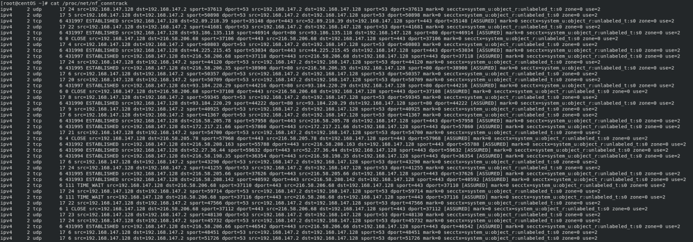
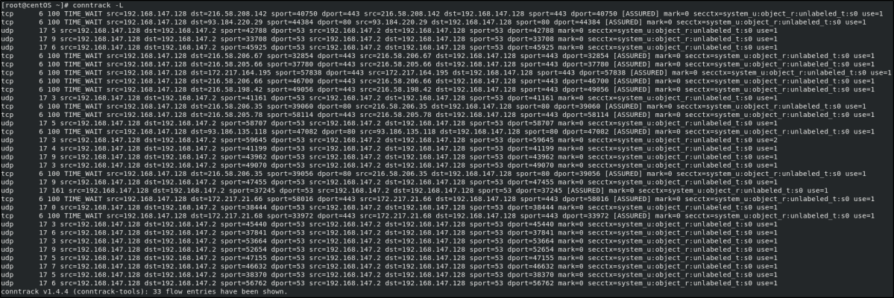
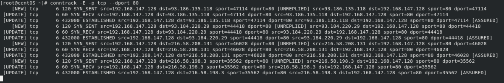

connections tracked informations
The file
/proc/net/nf_conntrack is log
on connections tracking table from Linux kernel. The data from those records are used by kernel actually to make
some decisions.
 in
the file :
cat /proc/net/nf_conntrack
we can see informations about established connections.
The output is formatted like this:
•
First column: The network layer protocol name (ex: ipv4).
• Second column: The network layer protocol
number.
• Third column: The transmission layer protocol name (ex: tcp).
• Fourth column: The transmission
layer protocol number.
• Fifth column: The seconds until the entry is invalidated.
• Sixth column (Not all
protocols): The connection state.
If we want to see this data in a better format we can install the
conntrack-tools:
CentOS:
yum install conntrack-tools
Debian:
sudo apt-get install conntrack
We can use the
conntrack tool that provides a full featured userspace interface
to the netfilter connection tracking system that is intended to replace the old
/proc/net/nf_conntrack interface. This tool can be used to search, list, inspect and maintain the
connection tracking subsystem of the Linux kernel
OPTIONS:
-L: list of all connection
tracked
-E: display realtime event connection log
-p: specify
protocol
--dport: destination port in his original direction